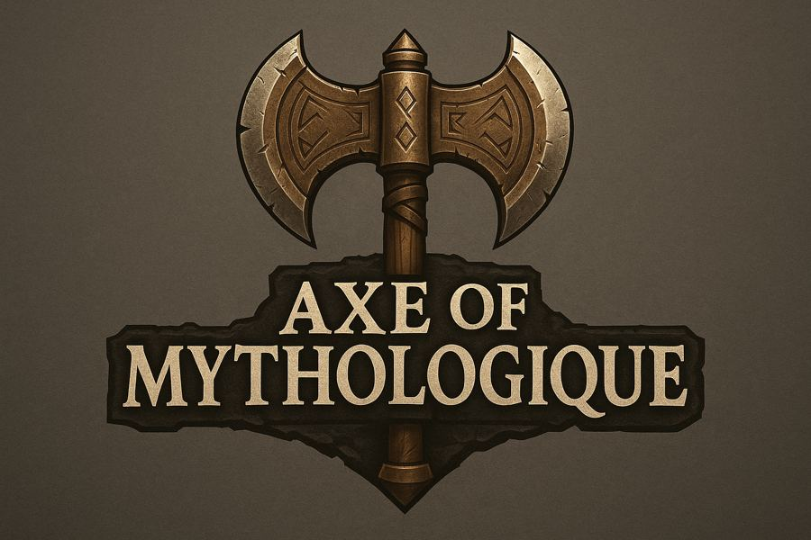

Axe Of Mythologique explore un système de métiers et un système de construction ancrés dans un univers mythologique.
Le projet est encore à un stade de conception : les bases du monde et de ses règles sont posées, le reste reste à préciser.